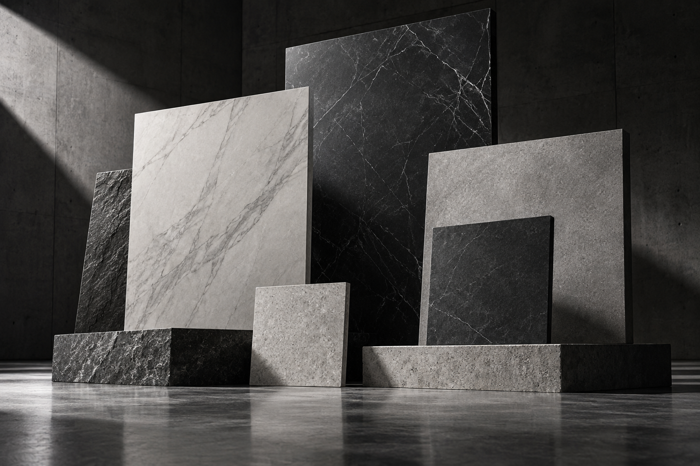

Floor & Wall
Options for interior walls, wet areas, feature surfaces and high-traffic floors.
Architectural surfaces for floors and walls—selected with the right balance of format, finish, durability and installation requirements.

Options for interior walls, wet areas, feature surfaces and high-traffic floors.
Material choices explained through absorption, strength, maintenance and value.
Surface selection aligned with design intent, safety and cleaning requirements.
NEED HELP SELECTING TILES?